CalicoPart-Focused Semantic Co-Segmentation with Large Vision-Language Models
CVPR 2025
TL;DR
We introduce Calico, a vision-language model that compares multiple images to identify and segment common objects and shared or unique parts. Calico learns fine-grained correspondences across images, supporting reasoning about similarities and differences with pixel-level grounding.

Multi-image co-segmentation
Across two images, Calico segments the common object (top), shared parts (middle), and parts unique to each image (bottom). The colored masks ground each answer in the corresponding pixels.
Abstract
Recent advances in Large Vision-Language Models (LVLMs) have enabled general-purpose vision tasks through visual instruction tuning. While existing LVLMs can generate segmentation masks from text prompts for single images, they struggle with segmentation-grounded reasoning across images, especially at finer granularities such as object parts. In this paper, we introduce the new task of part-focused semantic co-segmentation which involves identifying and segmenting common objects, as well as common and unique object parts across images.
To address this task, we present Calico the first LVLM designed for multi-image part-level reasoning segmentation. Calico features two proposed components, a novel Correspondence Extraction Module that identifies semantic part-level correspondences, and Correspondence Adaptation Modules that embed this information into the LVLM to facilitate multi-image understanding in a parameter-efficient manner. To support training and evaluation, we curate MixedParts a large-scale multi-image segmentation dataset containing ~2.4M samples across ~44K images spanning diverse object and part categories. With just 0.3% of its parameters finetuned, Calico achieves strong performance on this challenging task.
Contributions
- Novel Task. We introduce the novel task of part-focused semantic co-segmentation which aims to co-segment and label common and unique parts between objects across images for granular object comparison. To the best of our knowledge, this is the first work to formalize this multi-image object/part co-segmentation task.
- New Multi-Image Pixel-Grounded LVLM. We propose Calico (Component-Focused Adaptive Learning for Multi-Image Co-Localization of Objects), an LVLM designed for part-focused semantic co-segmentation. Calico incorporates a novel correspondence extraction module to learn cross-image semantic correspondences and an adaptation module to enable localized co-segmentation across multiple images in a parameter-efficient manner.
- New Dataset. We introduce the MixedParts dataset for part-focused semantic co-segmentation, compiled from diverse part segmentation datasets and featuring images of logically comparable objects and parts.
Calico Method

Calico uses a Q-Former cross-attention module to query efficient
image
embeddings from a pretrained image encoder, which are passed
into a Vicuna-based LLM
as image features. We extract [SEG] tokens from the output text, which are used to
prompt a
SAM decoder to output corresponding
segmentation masks.
We propose two modules, the Correspondence Extraction Module (CEM) and
the
Correspondence Adaptation
Module (CAM), to enable the learning of semantic-rich features for multi-image correspondence. In
Calico k CAMs are strategically placed every N/k layers within the
N-layered LLM. CEM focuses on
extracting fine-grained semantic information at the part level, capturing correspondences across
similar
yet distinct object categories by leveraging self-supervised DINO features. CAMs then reintegrate
this
part-level correspondence information back into the next layer of the model.
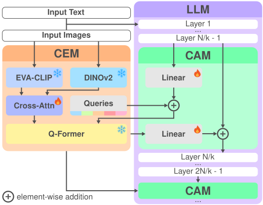
MixedParts Dataset
To support training and evaluation for part-focused co-segmentation, we introduce a novel dataset named MixedParts curated from publicly available part segmentation datasets: ADE20K-Part234, PACO, and PartImageNet.
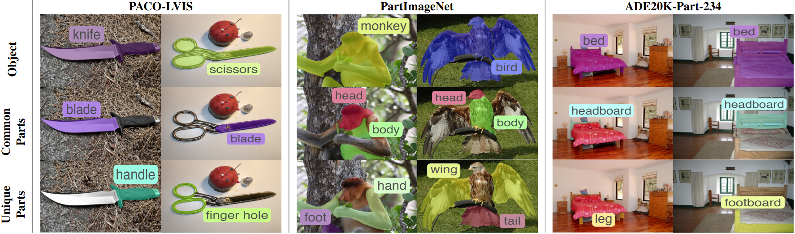
Example image pairs in MixedParts with objects, common parts, and unique parts segmented and labeled. Each column represents a different image pair, derived from a set of diverse datasets with various levels of detail, PACO, PartImageNet, and ADE20K-Part-234, covering both rigid and non-rigid objects and parts. Each image pair is displayed across 3 rows to illustrate (i) the (possibly common) object, (ii) the common object parts, and (iii) the unique object parts in each pair.
Quantitative Results
MixedParts benchmark
Experimental Results on MixedParts. The first three metrics are segmentation-based, while the last two are text-based. Calico outperforms baselines across all metrics.
| Method | AP50 | mIoU | Recall | SS | S-IoU |
|---|---|---|---|---|---|
| Cascade | 5.7 | 27.9 | 19.0 | 32.2 | 14.8 |
| Multi-Image PartGLEE | 1.2 | 29.3 | 9.7 | 78.5 | 63.3 |
| Multi-Image VLPart | 13.4 | 42.8 | 34.6 | 59.1 | 46.5 |
| Multi-Image GLaMM | 42.9 | 59.9 | 54.9 | 76.8 | 71.2 |
| Multi-Image LISA | 41.4 | 59.7 | 55.5 | 78.7 | 72.5 |
| CALICO | 45.9 | 63.7 | 59.7 | 82.7 | 77.1 |
MixedParts results by task
Separate comparisons for common objects, shared parts, and unique parts. AP50, mIoU, and recall evaluate segmentation; semantic similarity (SS) and semantic IoU (S-IoU) evaluate labels. Higher scores are better.
| Method | AP50 ↑ | mIoU ↑ | Recall ↑ | SS ↑ | S-IoU ↑ |
|---|---|---|---|---|---|
| Common objects | |||||
| Cascade | 7.9 | 37.0 | 28.2 | 38.1 | 29.6 |
| Multi-Image PartGLEE | 1.5 | 33.5 | 9.7 | 87.2 | 82.8 |
| Multi-Image VLPart | 18.2 | 42.4 | 45.6 | 58.8 | 55.2 |
| Multi-Image GLaMM | 63.2 | 71.6 | 73.3 | 86.5 | 86.2 |
| Multi-Image LISA | 60.2 | 70.0 | 71.9 | 86.0 | 85.3 |
| CALICO (ours) | 69.2 | 75.2 | 78.5 | 93.7 | 93.4 |
| Common parts | |||||
| Cascade | 3.5 | 18.6 | 11.7 | 25.6 | 6.5 |
| Multi-Image PartGLEE | 1.9 | 32.0 | 10.5 | 78.4 | 63.3 |
| Multi-Image VLPart | 15.7 | 44.5 | 29.1 | 54.4 | 39.9 |
| Multi-Image GLaMM | 36.7 | 52.7 | 48.4 | 68.5 | 59.0 |
| Multi-Image LISA | 37.3 | 54.2 | 50.5 | 73.9 | 63.4 |
| CALICO (ours) | 38.4 | 56.9 | 51.9 | 74.4 | 64.4 |
| Unique parts | |||||
| Cascade | 5.7 | 28.1 | 17.2 | 32.8 | 8.2 |
| Multi-Image PartGLEE | 0.1 | 22.3 | 8.8 | 69.9 | 43.9 |
| Multi-Image VLPart | 6.4 | 41.5 | 29.0 | 64.0 | 44.4 |
| Multi-Image GLaMM | 28.9 | 55.3 | 43.1 | 75.3 | 68.4 |
| Multi-Image LISA | 26.6 | 55.0 | 44.1 | 76.2 | 68.7 |
| CALICO (ours) | 30.2 | 59.1 | 48.8 | 80.1 | 73.4 |
Qualitative Results
Calico demonstrates pixel-grounded understanding of various non-rigid (e.g., humans, animals) and rigid objects (e.g., car, bed), including less common objects and their parts (e.g., the bed and pocket of a pool table):
Common object · person
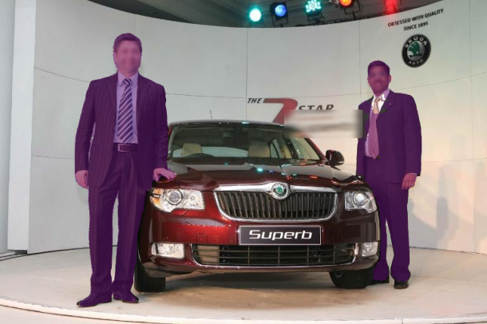
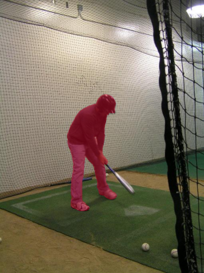
: The common object is the person.
Common object · car
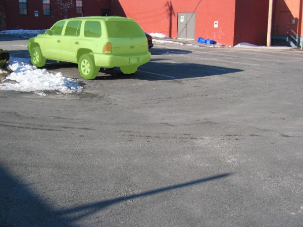
: The images include a car.
Common parts
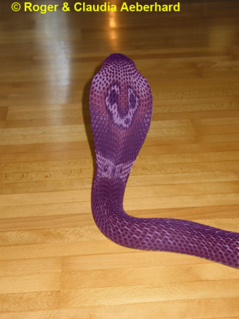
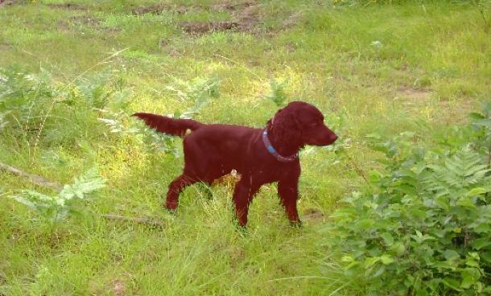
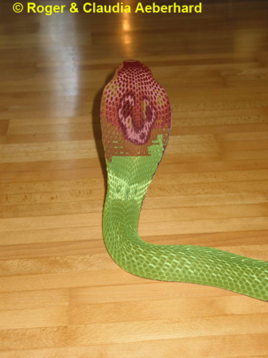
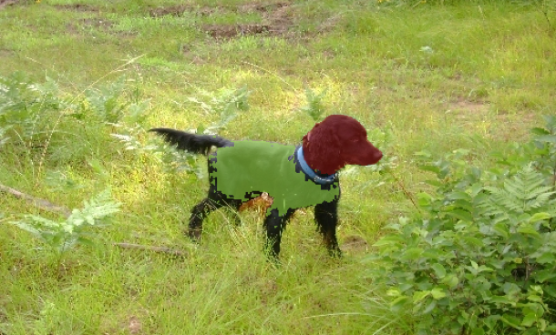
: The
images show a snake and a dog.
The
detected common parts are a body and a head.
Unique parts
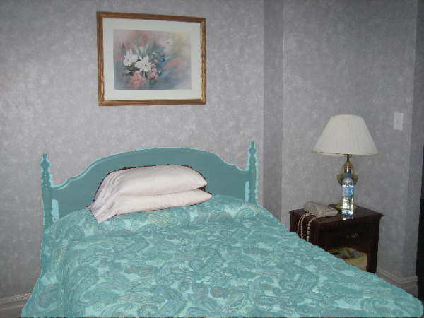
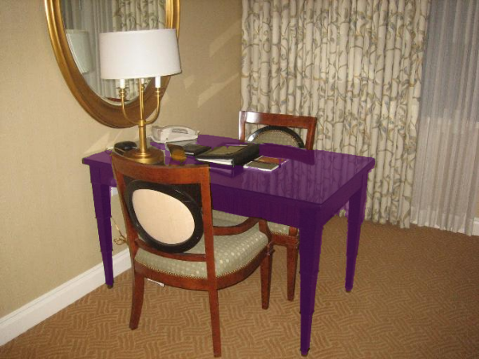
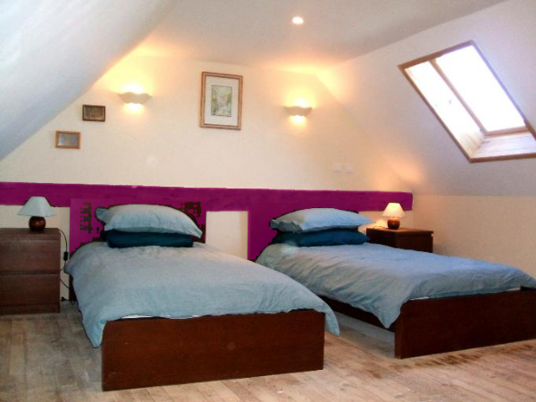
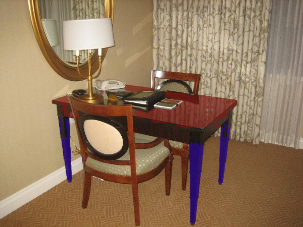
: The
images show a bed and a pool table.
The
unique parts present are a headboard
a bed and a pocket.
Calico outputs are highly context-driven when distinguishing objects across images, despite variations in angle, size, saliency, etc. Different image pairings prompt the model to segment different objects accordingly, rather than defaulting to the most salient object in each image:
Context-dependent object · dog
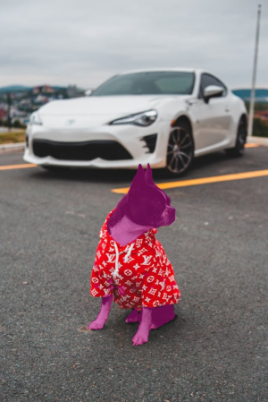
: The images show a dog.
Context-dependent object · car
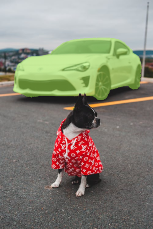
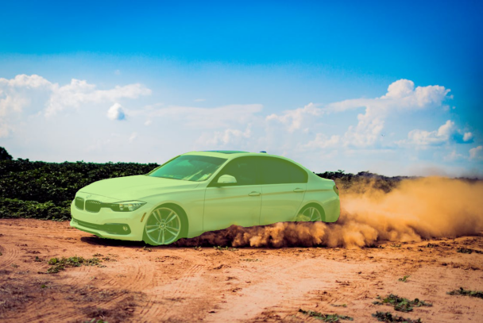
: The images include a car.
BibTeX
@inproceedings{nguyen2025calico,
title={CALICO: Part-Focused Semantic Co-Segmentation with Large Vision-Language Models},
author={Nguyen, Kiet A. and Juvekar, Adheesh and Yu, Tianjiao and Wahed, Muntasir and Lourentzou, Ismini},
booktitle={Proceedings of the IEEE/CVF Conference on Computer Vision and Pattern Recognition (CVPR)},
year={2025}
}